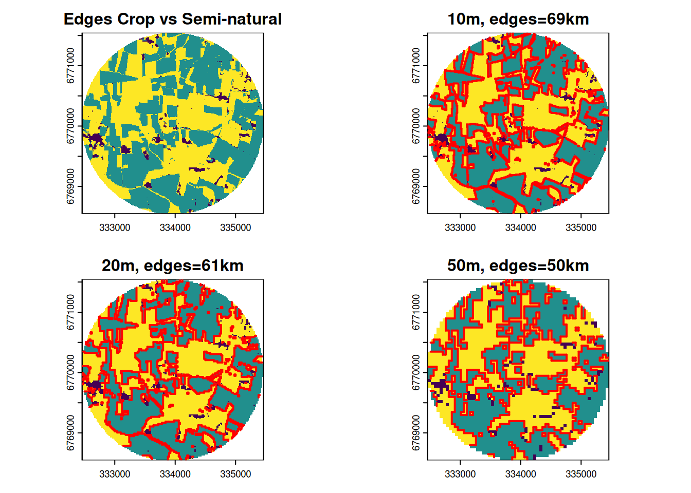
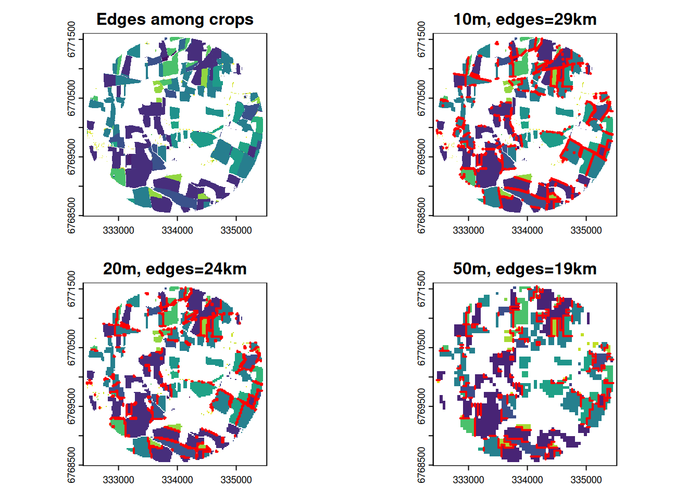
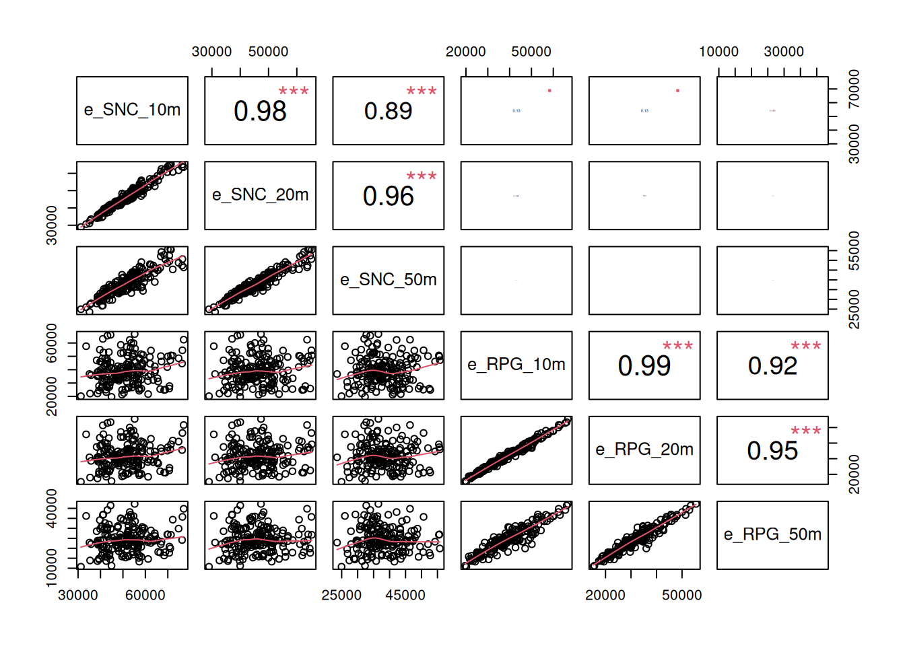
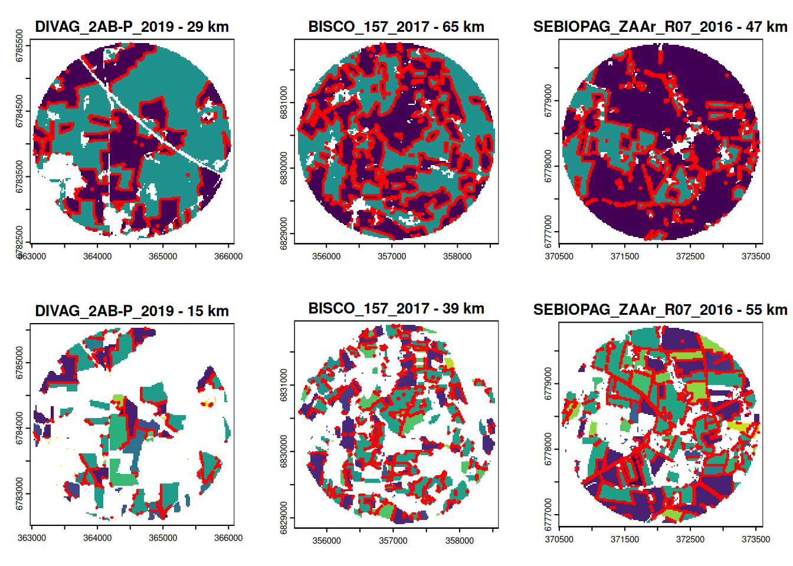
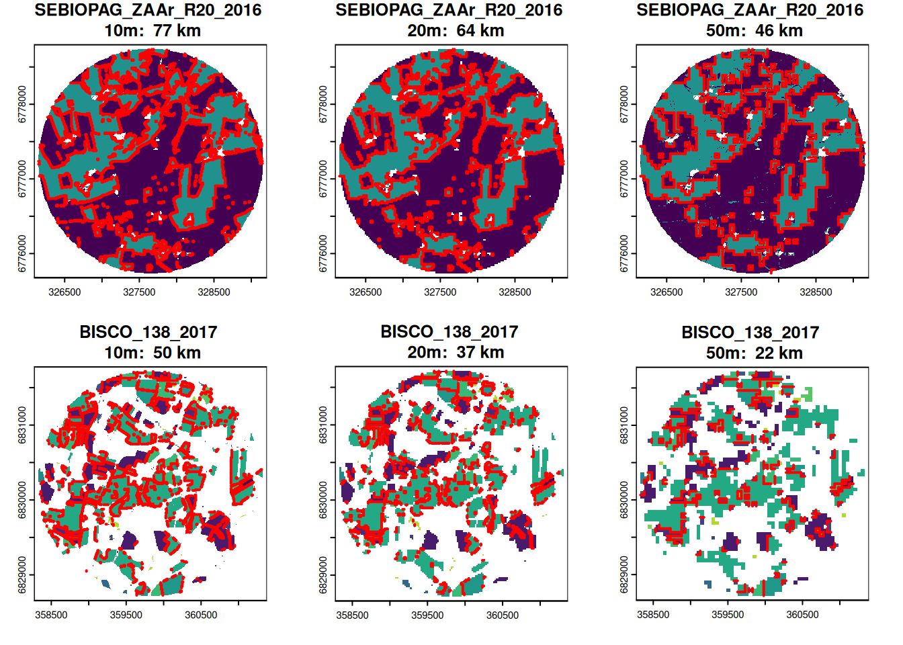

Exploration de la densité de bordures
Objectif
L’objectif de ce document est d’explorer comment évaluer la densité des bordures à partir des données rasters RPG original + OSO avec une résolution spatiale de 10m.
Ces tests sont réalisées sur les sites d’échantillonnage d’Ille-et-Vilaine (d35 N=227) en utilisant une taille de buffer de 1500m.
Pour calculer les densités de bordures, il faut définir quelles interfaces à considérer. Ici, on a testé deux approches:
- longueur d’interfaces entre les cultures et les habitats semi-naturels
- longueur d’interfaces entre les cultures répertoriées dans le RPG
La densités de bordures depend aussi de la résolution spatiale. Ici on va tester 3 résolutions: 10m (résolution originale), 20m, 50m.
Example d’un buffer
Interfaces cultures vs semi-naturels
Interfaces entre cultures

Summary:
- Il est possible de calculer les longueurs d’interfaces entre différentes catégories directement sous R en faisant l’opération par buffer.
- La résolution à 10m permet de capturer toutes les interfaces, mais est sensible aux imprécisions de la numérisation des parcelles (incohérences RPG-OSO).
- La résolution à 50m est peut-etre trop grossière mais permet d’éliminer les incohérences ou les artefacts liés à la numérisation des parcelles.
Comparaison

Les longueurs d’interfaces entre les cultures et les habitats semi-naturels ne sont pas corrélés avec les longueurs d’interfaces entre cultures. La résolution de 20m semble un bon compromis entre les résolutions à 10m et à 50m.
Zoom in
Min-max outliers

Grande influence de la résolution spatiale
